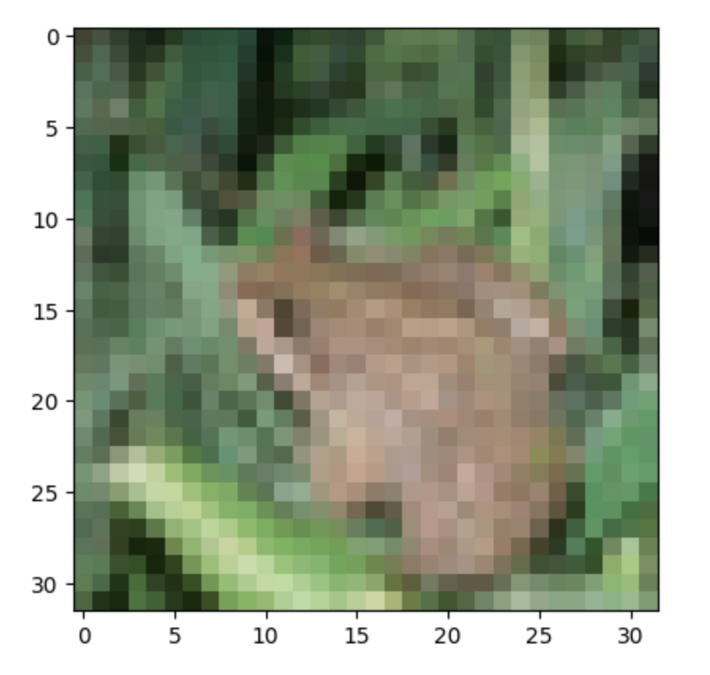

![]()
Visualizing VGGNet Activations
While working through a neural network optimisation course I wanted to see what a pruned VGG-style model actually latches onto. This post is a log of the setup, the dataset, and the quirks I noticed while poking at the activations.
Model setup
The backbone is a VGG19-inspired network trimmed to accept 32x32 inputs. It clocks in at 9.23 million parameters and about 606 million MACs before any pruning. I ran granular pruning to zero out weights below a learned threshold, which cut the parameter count nearly in half without breaking the output distribution. Because the pruning mostly deletes values that were already close to zero, the activation patterns in the remaining filters stay surprisingly intact.
Hooks were registered on every convolutional block immediately after the ReLU. During a forward pass the tensors are copied to CPU, normalised per channel, and saved as PNG grids. Nothing fancy--just PyTorch hooks feeding a small Matplotlib helper.
Dataset
All experiments were run on CIFAR-10. The test split became the playground for visualisation so everything shown here was unseen at training time. The ten classes (airplane through truck) are compact enough to keep runs quick but still diverse enough to make the filters learn interesting colour and texture detectors.
What the activations show
The example below uses a frog image from the test set. Darker green indicates
stronger positive activation after the ReLU.

The first two convolutional blocks respond to broad colour blobs and the curved outline of the body. Mid-level blocks start to separate the frog from the background water ripple thanks to the narrow receptive fields focusing on texture. By the time the signal hits the deeper layers the activations look nothing like the original image--mostly sparse highlights where the network is convinced it has found amphibian skin. The classifier head still hedges a bit (frog vs deer), but the high-confidence channels correspond to filters that survived pruning, which was a nice sanity check.
The grid below captures every recorded activation map for that sample. It is dense, but scrolling through it made it clear which filters are dead after pruning and which ones still carry the classification.